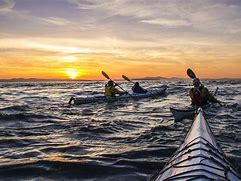

My name is Jonathan Lee. I am a husband and a father to 3 beautiful girls. I've served in the U.S. Army for over 7 years where I worked as a Surgical Technician. I'm from Arizona and love the sun, and can't wait to get back to the heat. I want to continue my education and become a CRNA.
With experience as a Surgical Technician, I specialize in Neuro, Vascular, and ENT Surgery. In my spare time, I enjoy gaming, biking , and water sports.
